Media Initiatives Center presents the “Velvet Sketches” project. It will take you back to the spring of 2018, to see, hear, speak and act together with hundreds of thousands of citizens of Armenia who had stormed the streets, demanding a change.
How and why did it happen?
Our story is about the power of creativity and daring action, invincible souls and good energy, joy and ingenuity, love and unity, unbridled imagination and inner freedom.
In those days, people weaved their own little stories and became the heroes of the stories they created. Their stories were sometimes touching, sometimes funny; some of them were real, and some were make-believe. The people decided on their own when and how to tell their stories. They narrated through photographs or live Facebook broadcasts, designing large posters or scribbling slogans on pieces of paper.
They voiced their protests and desires through the sounds of Komitas and the wild rhythms of drums, through the spontaneous birth of songs, dances, games and, of course, action. And, seeing each other, they gained courage and strength, believed in their own power, and competed with each other on creativity.
By using traditional and innovative communication tools and applying them professionally or as amateurs, the people became the media.
See how this happened…
- In 2017, President of Armenia Serzh Sargsyan initiated constitutional amendments, as a result of which power would be handed from the President to the Prime Minister.
- After his two presidential terms, Serzh Sargsyan decided to continue ruling the country for a third term, this time as Prime Minister.
- On March 31, 2018, opposition MP Nikol Pashinyan started a protest march against Serzh Sargsyan’s premiership.
- The wave of mass protests in the country gained traction particularly after April 17, 2018, when the Parliament elected Serzh Sargsyan as Prime Minister.
- Within several days, the demonstrations paralyzed the country. Streets, intercity highways, and the metro were blocked, even the road to the airport was closed off for a few hours. Students walked out of classes and workers in all spheres declared a general strike.
- Under this public pressure, Serzh Sargsyan resigned on April 23, after just five days as Prime Minister.
- On May 1, the Parliament voted against Nikol Pashinyan as Prime Minister. On squares, in homes, cafes and even on public transport, the whole country watched the 10-hour parliamentary deliberations that day.
- On May 8, hundreds of thousands of protesters forced the country’s Parliament to vote in favor of the candidate they considered their Prime Minister – Nikol Pashinyan.
- freedom
- human rights
- a good education
The first phase of the protests was met with aggressive actions by the police. On April 16, the police blocked Yerevan’s Baghramyan Avenue (where the National Parliament and the President’s Office are situated) with barbed wire. They used batons as well as stun and sonic grenades to disperse protesters, leaving 54 people injured, including 2 policemen. Nikol Pashinyan, the leader of the protests, was injured and taken to hospital.
Armenian reporters were one of the main restraining factors for the police, when it came to using force against protesters. Being in these hot spots required not only bravery, but also physical abilities and fast reactions, as the protests were decentralized and traffic was blocked.
Mass detentions of peaceful activists were part of the first phase of the protests. People stood with each other, the detainees shouted their names out and those who were around passed the information on to human rights defenders. The lists of people detained circulated in Facebook groups, volunteer lawyers and activists tracked the police departments involved, and ensured that those people were released soon.
- as aprofesional
- foropportunities
- forlove
Narek Alexanyan was one of those photoreporters who were on the streets almost 24/7. It was quite a challenge to be in all places at once, as something was constantly happening on several streets.
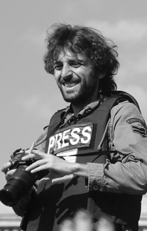 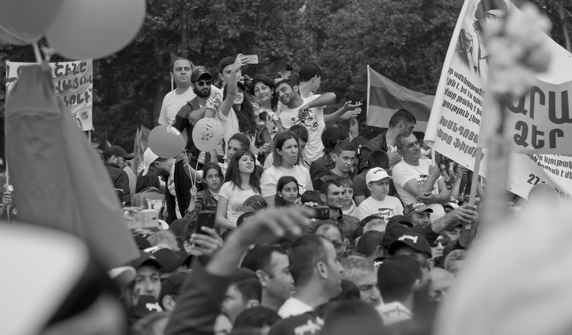
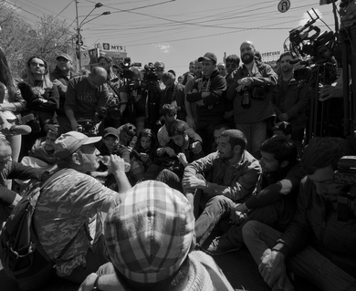
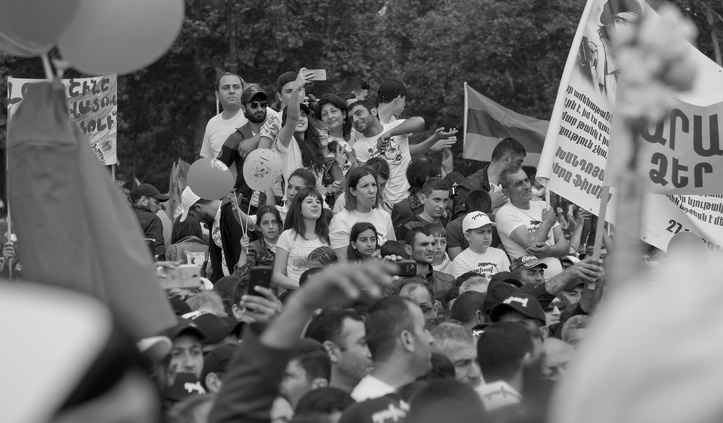
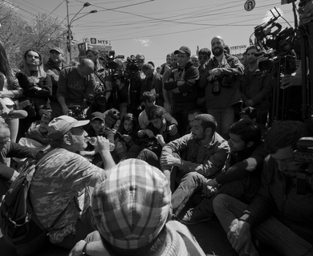
Naturally, there was a mobile device in the hand of every participant. It was a tool to document events, share information and, of course, to celebrate their presence on the scene. Selfies –what is a revolution without them?
- March 1
- illegitimate rule
- impunity
Some curious or funny incidents developed into memes. Ashot was one of them. A man from the crowd
addressed one of the policemen as if he knew him well. "Ashot, you think you can put on your helmet
and I won’t recognize you? Do you know your Granny is here, too? Are you gonna hit her, too? "
It later turned out that this was an improvised performance. But Ashot became a meme, he appeared
on posters and in anecdotes. It was a call to the police to join the people.
Live broadcasts became a vital part of people’s involvement during the protests. It was late at night and one of the protesters decided to use the live broadcast of Azatutyun TV and send a
message to his wife so that she would not worry. "Ira, I’ll be home around 1 [a.m.]," he said to
the camera.
Curiously, his wife wasn't watching and didn't get the message. But the whole country did. Songs
and posters "Ira, don't wait for your husband, he won't come tonight," emerged and entertained
people.
People had fun. Here is a recreation of the game Mortal Kombat, where Nikol Pashinyan is fighting
with Serzh Sargsyan and then with Karen Karapetyan, the ex-Prime Minister.
In another video, the leader of the protests is Super Mario defeating the Republican MPs.
The most popular of these was probably the trailer of a non-existent movie starring Nikol Pashinyan and Serzh Sargsyan.
- love
- freedom
- the future


Barbed wire, helmets and water cannons, police forces and police weapons on one side... Open hands, the drum and Viking chant of “hu-hu-huu” on the other.


Students contributed to a considerable part of the success. They boycotted classes, took to the streets, were united, optimistic, and proactive. Here, their protest demanded the resignation of the Minister of Culture and called the Ministry employees to join them.


It was the day before the MPs voted for Serzh Sargsyan to become Prime Minister. Police lines and barbed wire featured in front of the President’s Office, Baghramyan 26. There was tension, fear. In about half an hour, the police would use force, leaving dozens injured. Later, Nikol Pashinyan and his team would take the decision to decentralize their actions, thus making it hard for the police to concentrate force and use it against a large number of people at once. Love didn't win that day, but it would soon...
- a dream
- love
- dignity


It’s hard to tell how it changed, but it changed. The persistent apathy of the people and lack of belief in themselves or their ability to affect any process in the country changed to participation and emotional upliftment.


 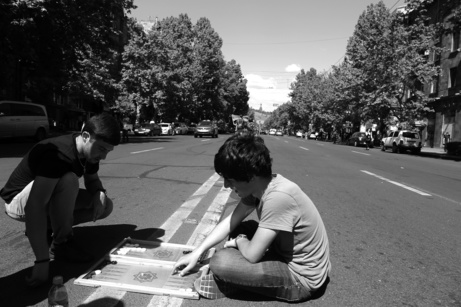
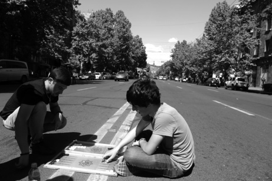
The line between the activists and passers-by dissolved. Someone who had gone to the grocery store would end up live streaming videos of police lines, or sitting on the floor of the crossroads with the activists. One’s degree of participation was decided spontaneously.
 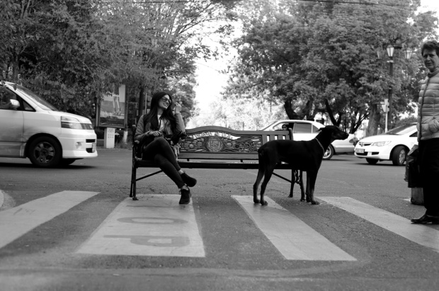
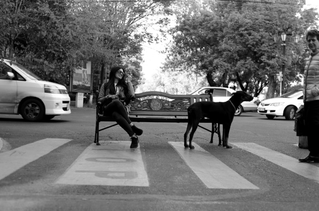

The active and bright participation of young girls and women was a new phenomenon for Armenian society, which is used to traditional, modest behavior by women.
- againstpoverty
- againstmigration
- for myfuture

This tire was punctured deliberately by the car's owner. People used this method to block traffic and, at the same time, have a convincing explanation in case the police show up.
- I am anartist
- my art ispolitical
- this is mycountry
Many posters were designed and printed through the initiative of ordinary people. Their style and quality ranged from beautiful calligraphic typography to homemade black-and-white penned copies.
 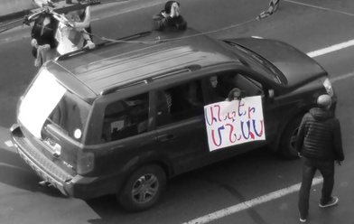
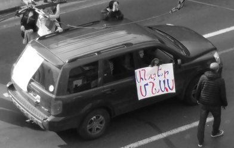
Some print houses refused to receive payment and printed the revolutionary posters and flyers free of charge. In general, contributing any way you could and feeling involved was very common those days.
Posters said:
Reject Serzh, Reject his brother Sashik, reject the RPA...
Martuni is with you, Vardenis is with you, Little Vedi is with you…
Police, join us!
Serzh-less Armenia!
The people rule!
Nikol Pashinyan – national hero!
Checkmate, baby!
- toreturn home
- for adream
- for equality
The song "My step" with lyrics by Nikol Pashinyan, music and performance by Hayk Stver, was meant to become the anthem of the revolution. And it did, but it was not the only one.
As the movement grew larger, new songs emerged one after the other – different in their genres and suiting the tastes of different kinds of people. Just as there was a place for every type of person in this movement for change, so there was a variety of songs as a reflection of the people at the events.
- my professional calling only

"Policeman, join us!", "The police is ours!" ... These calls were shouted out from the very first days. Nikol Pashinyan promoted this attitude to avoid the spread of hatred within society. Mostly, it had its effects.
"Turn to us, Mr. Policeman, I beg you, turn to us. I am fighting so that your children and mine can live in a better country. It's you who beat them! How long will this go on?"


School pupils skipped classes en masse, joining the protests against the regime. Parents took their small children to the rallies. This is quite unusual behavior for Armenians who are very cautious and protective of their children. This was a move symbolizing the peacefulness of intentions.
- againstinjustice
- for myprinciples
- forsolidarity


What can one use to block traffic? Just about anything. Park benches, vehicles, garbage containers and, after all, themselves. This experience came from the past – the Electric Yerevan protests kept one of the Yerevan's main avenues, Baghramyan, blocked for more than two weeks in 2015.
for Armenia to be
- free
- happy
- a decent place to live
Young mothers with their kids, as their live shields and as a statement. They stood up so that their children could have a better life, better future, better country to live in, and a better course of history. They had never lived in Soviet times and now rejected the rulers who had come from the past.
In the video, people staged a theatrical funeral of Serzh Sargsyan. The idea probably came after the leader of the protests called Mr. Sargsyan a political corpse. A puppet of Cheburashka, a famous cartoon character from Soviet times and an insulting nickname of Mr. Sargsyan, was placed in a coffin. Performances, puppet theaters, humorous posters, slogans and poems made the Velvet Revolution fun to participate in.
- as acitizen
- as anartist
- againsthuman depravity
Creativity of all kinds, freedom of expression in all its means, flexibility in what you do, when you do it and who you do it with — these are the things that united the people who had taken to the streets. Smiling people... quite an uncommon sight, given that Armenians don't smile much.
Before the Velvet Revolution, the flag was not so popular among Armenian people. You would rarely see one on cars or at windows as is usual in the USA, France, UK etc. But this suddenly changed!
The expressions of the people are what make the real face of Armenian Velvet Revolution.
Sona Kocharyan
Levon Kalantar
Nouneh Sarkissian
Nelly Rafaelyan
Narine Safaryan
Harutyun Mansuryan
Adrine Der-Boghossian
Vardan Arzumanyan
provided photo and videography
Ani Gevorgyan
Photolure
A1+
Emil Avetisyan
Azatutyun TV
Civilnet
Special thanks to the people featured in the project
email: office@mediainitiatives.am
website: mediainitiatives.am
website: media.am
facebook:/MediaInitatives
twitter: @MediaIC
instagram: @MediaIC